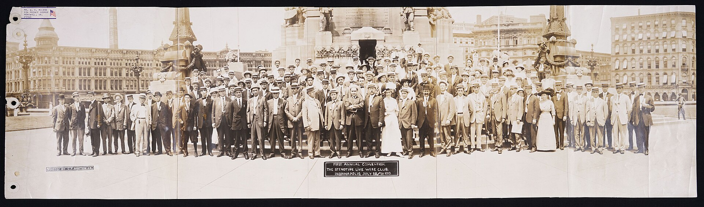
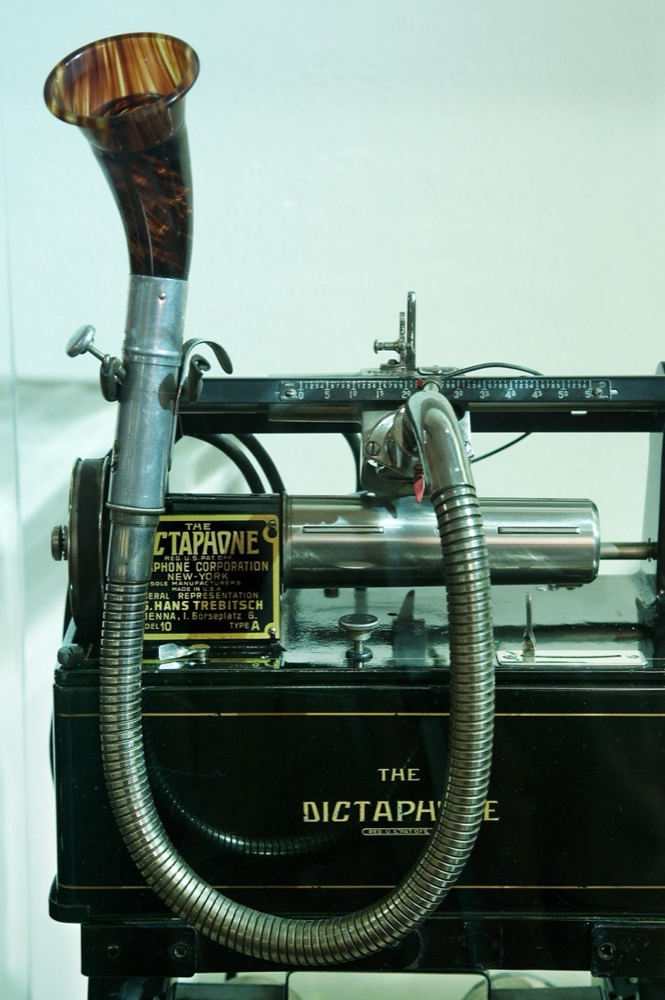
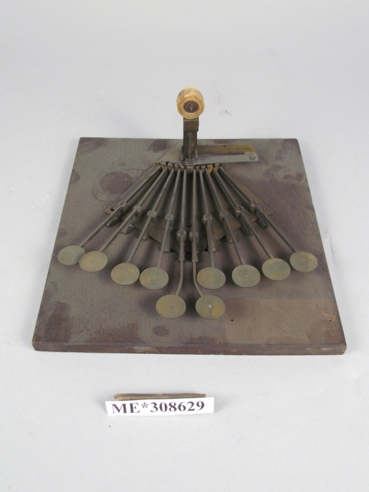

La visio, notée sur votre Mac
Un clic sur Réunion dans le Dock enregistre l'appel, un second le transcrit et sépare les voix. Rien ne quitte l'ordinateur.
Pouvez-vous présenter votre exploitation ?
Nous cultivons cent vingt hectares de blé et de tournesol.
Essai simulé dans la page : rien n'est enregistré. Le texte vient de deux voix de synthèse de macOS.
- Ce que dit le badge
Rouge : la durée défile dans le badge, et le carré l'arrête. Un clic sur Réunion dans le Dock fait la même chose.
Deux clics, un texte

Un clic dans le Dock
Réunion enregistre le son de l'ordinateur et votre micro. Le badge passe au rouge.
Un second clic pour arrêter
Le son seul est gardé, en .m4a. La transcription démarre en arrière-plan.
Locuteurs : 2
Pouvez-vous présenter votre exploitation ?
Nous cultivons cent vingt hectares de blé et de tournesol.
Et sur l'irrigation, où en êtes-vous ?
Le texte, voix séparées
Dans ~/Movies/Reunions, à côté du son. Le Finder le montre, une notification aussi.

Il fallait quelqu'un dans la salle
Indianapolis, juillet 1913 : la première convention du Stenotype Live Wire Club. Garder une réunion en note demandait alors un métier, une machine et une place à la table.


Aujourd'hui, la machine est déjà sur votre bureau, et elle ne quitte pas la pièce.
Ce que fait l'outil
Réunion capte l'ordinateur et votre micro 12:04 ■, transcrit sur la puce du Mac M1 et suivants, sépare les voix Locuteur 2 et n'envoie rien 0 octet.
Les questions avant d'installer
Ni l'audio ni le texte. Les modèles se téléchargent une fois. Si vous activez la mise à jour au clic, Réunion lit une fois par jour la dernière version publiée sur GitHub, sans rien envoyer.
Non. Contrairement aux notes de Meet, un enregistrement local ne s'annonce à personne. Prévenez-les en début de réunion ; le menu du badge vous le rappelle.
Une fois par Mac : l'enregistrement de l'écran et de l'audio système, le micro, puis les notifications de Réunion. Les mises à jour de l'outil ne les font pas perdre.
Souvent, pas toujours. Le seuil des réunions a été mesuré sur une visio à deux voix. Si deux personnes sont fondues en une, la commande seuils compare plusieurs réglages sans retranscrire.
Un Mac Apple Silicon, M1 ou plus récent, avec macOS 15 ou plus récent. Il faut aussi ffmpeg et les outils de développement d'Apple, qui compilent la petite application du Dock.
Réunion transcrit en français. Pour un fichier en anglais, la ligne de commande accepte --langue en.
Trois commandes
À coller dans le Terminal. La troisième pose Réunion dans le Dock. Au premier clic, macOS demande les autorisations. Le guide complet détaille chaque étape, et la désinstallation.
$ brew install ffmpeg $ uv tool install git+https://github.com/web-rn20/rn20-transcription-locale $ transcription-locale raccourci